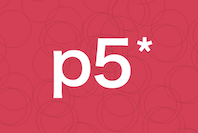

Software&Network:2
Week1
9/27-10/9 アルゴリズム・データストラクチャー
○Scratchを使ってすごろくのマスを作る○
作業工程


Bus Human Character
「Bus」「Human」「Sign」「Character」のそれぞれに別のプログラムをして作成した。
できたものがこちら 👉 scratch
○個人の感想○
今回「scratch」でプログラミングを体験したが、想像していたよりも手間がかかった。中でも特に時間の操作が難しかった。登場させるオブジェクトを増やせば増やすほどそれぞれの時間を少しずつ変えなければいけないので、
この部分に関して言えばあまり直感的に操作することはできなかった。また、同じような命令文を何回も繰り返してしまい、
とても見にくくなってしまったので、工夫が必要だと思う。
このようなことから「scratch」はどちらかといえば画面上のものを動かすよりも、実際に現実にあるものの方が
プログラムをしやすいのではないかと感じた。
以前に買った小さなドローンがあるのだが、「scratch」で動かせるようなので、挑戦してみたい。
Week2
11/8-21 クリエイティブコーディング
○p5.jsを使ってクリエイティブコーディング○
作業工程

○家紋を作る○


Openprocessing
説明
1
2
3
4
5
6
7
8
9
10
11
12
13
14
15